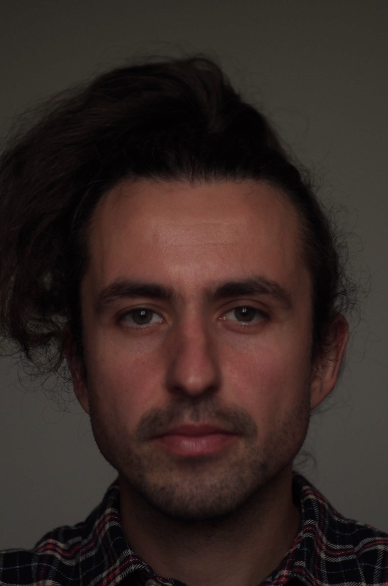

O mě

Jsem Matěj Grot a pocházím z Jižní Moravy, z obce Hrušky. Informatika mě přitahovala již od základní školy. Proto jsem po dokončení gymnázia zahájil studium na Masarykově Univerzitě, Fakulta Informatiky. Bohužel tou dobou jsem nebyl dostatečně disciplinovaný a zorganizovaný a studium jsem nedokončil. I tak jsem se ale informatiky držel a začal jsem pracovat jako manuální tester ve firmě Worklio, kde jsem se postupně vypracoval až na Produktového manažera. Na této pozici jsem se však necítil ve své kůži a rozhodl jsem se, že to s programováním zkusím ještě jednou. Rozhodl jsem se pro rekvalifikační kurz. To mi dalo nové nadšení a otevřelo mnohé obzory. Již od začátku mě velice lákal web development a k tomu jsem se také dostal, skrze frameworky Spring Boot a React. Nyní hledám práci na pozici webového vývojáře, ať už je to back-end či front-end. Myslím že vyvíjet webové aplikace je pro mě to nejzajímavější.
Rozvržení Webu
Co můžete najít na tomto webu:
- Dovednosti
- Zivotopis